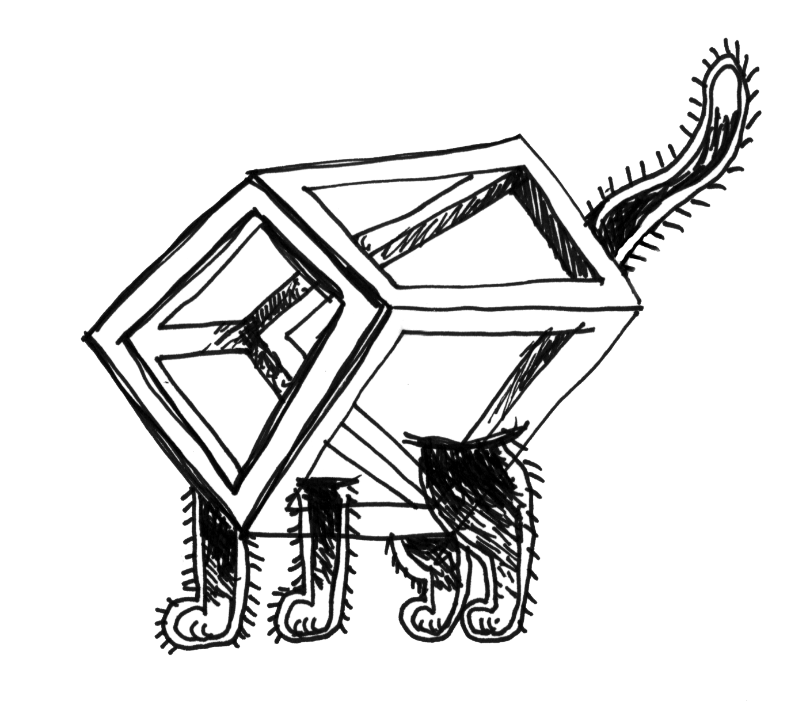
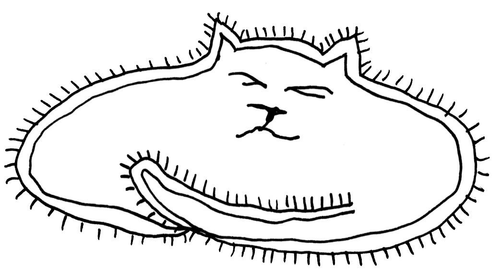
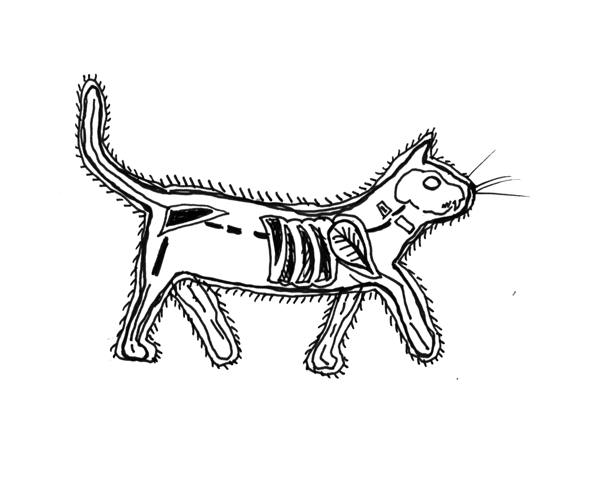
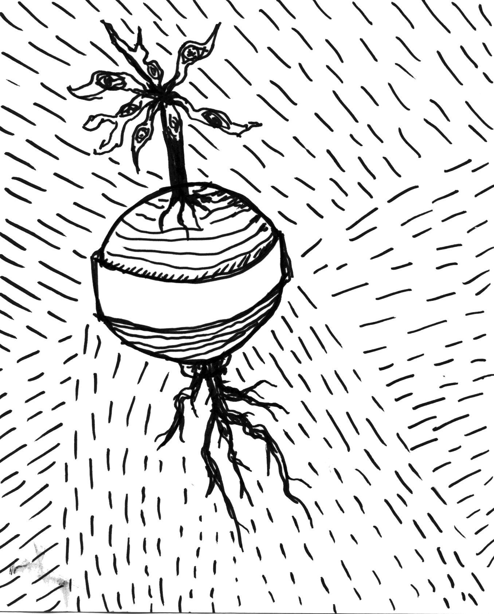
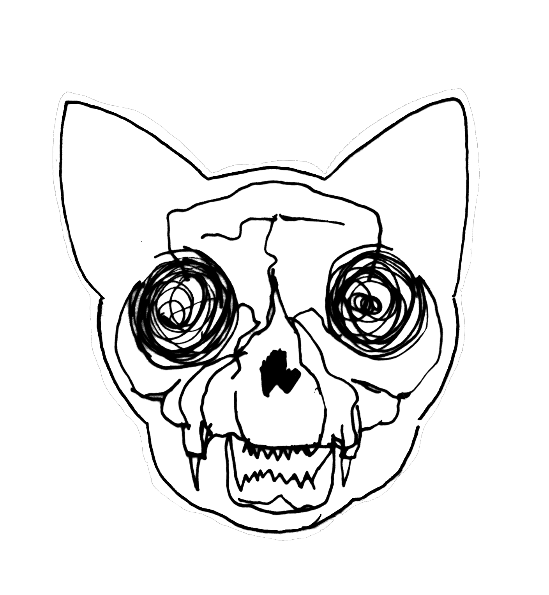
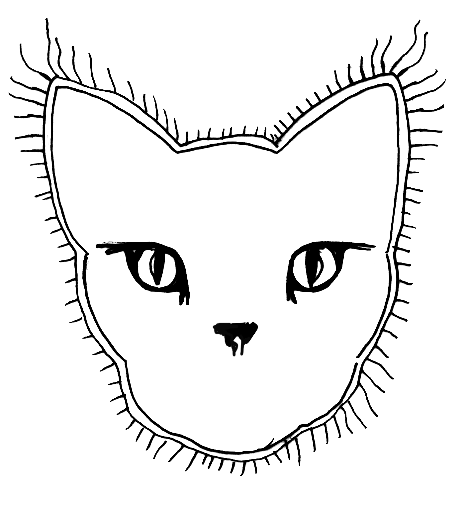

[7 November 1935]
Erwin Schrödinger writes in "Die gegenwärtige Situation in der Quantenmechanik" a thought experiment known as Schrödinger’s cat experiment.
[5 July 2017, 12:05 pm]
The noodles at Fu Jin taste bitter now. After each failed experiments, that’s where we go. Dr Augenblick said nothing. Our last failed attempt had drilled a deep wrinkle on his forehead. His look empties as does his glass.
[5 July 2017, 12:45 pm]
« The old lady next door’s got a cat named Truck. » said the lab assistant Carter after gulping down half a spring roll. « He’s cute» he adds. All sigh, except Augenblick, who winks at me with both his eyes: he’s one-eyed indeed.

[5 July 2017, 7:32 pm]
That night while walking home I received a strange text from Dr Augenblick « The story about the cat earlier gave me an idea that could be great. I need to tell you all about it. Let’s meet tomorrow morning in my lab. »
[6 July 2017, 11:00 am]
« I remember that old experience Schrödinger did with a cat» Augenblick told me. « Oh that was only theoretical, it was never performed, but I think that was not the point. » I answered. « Exactly! Why Schrödinger never mentioned that cats have 7 lives, and that they are averagely seven times shorter than ours? » he asked. « In all likelihood he didn’t find that relevant » I answered. « Precisely! » he said with a wink.
[6 July 2017, night]
Carter at the phone: « All right, I broke into the old lady’s house. As she’s completely deaf it was fairly easy to turn her flat upside down. Plus, she was absorbed in her new creation she’s currently knitting. I stole some dry food and I will bring you the cat right now! » Carter is quite gullible, but trustworthy.

[6 July 2017, 10:00 pm]
Augenblick’s laboratory. Carter arrives, a purring box in his arms. Dr Augenblick is staring at his blackboard, on which he writes several indecipherable equations. When he turns around, we can read: « We have the cat, now let’s solve all the universe’s mysteries. ».
[6 July 2017, ten seconds before midnight]
The experiment can begin. Augenblick is shaking with excitement: « If the cat survives this one, I swear that I will get it to the moon! » The cat is at the heart of the device, situated in a tesseract made in metal alloy through which reductive waves and feedback loops pass. The rest would be too difficult to describe.
[6-7 July 2017, midnight]
Countdown over. The first results are appearing on the screen, handshakes are being given, when suddenly Carter, very worried, notices on his screen: « The mass of the system between the initial and current stage varied from... Seven tons! Minus seven tons. Therefore, the system’s mass is currently… negative? »
[7 July 2017, 12:17 am]
Dr Augenblick and his team still haven’t come back. Loud explosions in the other room, while I’m processing the results. Nobody’s coming back. What if something happened? I let my notes here, in case I don’t return. P.S.: how I loved you, Caroline.
[7 July 2017, 12:30 am]
They’re all dead. More precisely, they’re all half-inexistent. Not dead. I Turned the generator off and hid the cat in my suitcase. I need to get out of here quickly.

[11 July 2017]
Caroline left me. My mental state was getting worst. Several long nights without sleep. Finally, I took my decision: I’m going to get rid of the suitcase. It had stayed in a corner. I didn’t have had the nerve to open it since that day.
[12 July 2017]
It’s all good, it got stolen. I was surveying the city looking for a place to drop the suitcase when a wild bunch of young rascals bumped into me. I almost broke my neck and before I turned over they had already taken it. They left running like mad dogs. Ha ha!

[25 December 2017, 02:00 am]
Maybe I drink too much. Burp. And one more lonely Christmas. I lost half my fortune investing in crypto currencies. Trapped in limbos…Since… How many times? I lost count. Nothing more to say.

[2 January 2018]
I thought that the cat’s incident would have no following. I live for another Caroline now, my Shiba dog who gives me the feeling of being loved. When those suitcase stealers moved in the building across the street, I couldn’t stop myself from spying on them. The cat never gets out of the apartment. The cat stealers seem harmless. But I fear that the cat’s value was greatly underestimated.
[9 January 2018]
Every night it’s the same ruckus. People are gathering in front of their building. 48 that night, I count them. One of them gets downstairs, opens the door and the crowd disappears inside. I hear them after singing in strange languages I do not know. Hands are getting out of the windows, carrying beers, cigarettes or biscuits. Then, a golden glow floods the room. They all keep quiet. Silence for me and for them. Should I stay in the dark?
[11 January 2018]
Today I decided to find out for sure. The gathering crowd has reached a tremendous number. I get out, melt in the crowd and reach a kind of stage built for the occasion. The entertainers’ phoney voices gather the crowd’s attention. I watch as the curtains open revealing a box on an elevated platform. It opens and I see…How – How could I believe it? … Dead silence in the crowd and then cries… Cries of joy?
[15 January 2018]
Things turned quiet again. The bustle of the last days transformed into a mind-numbing routine. Sometimes I see them outside without discerning a trace of enthusiasm or suspicion. However, nothing will make me forget what I saw. My heart is heavy, I am constantly on edge and the abandoned suitcase’s memory haunts me forever and ever in my head.
0xCa7E0090F4454CC3f22FB459f6C491923955B8a1